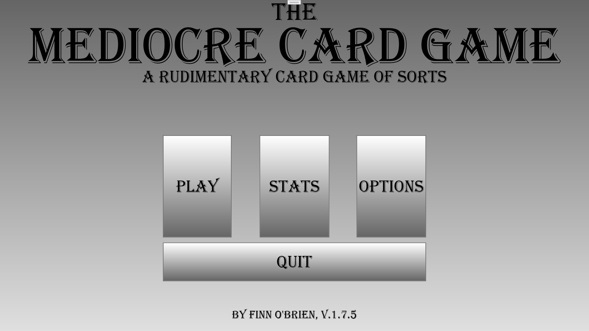
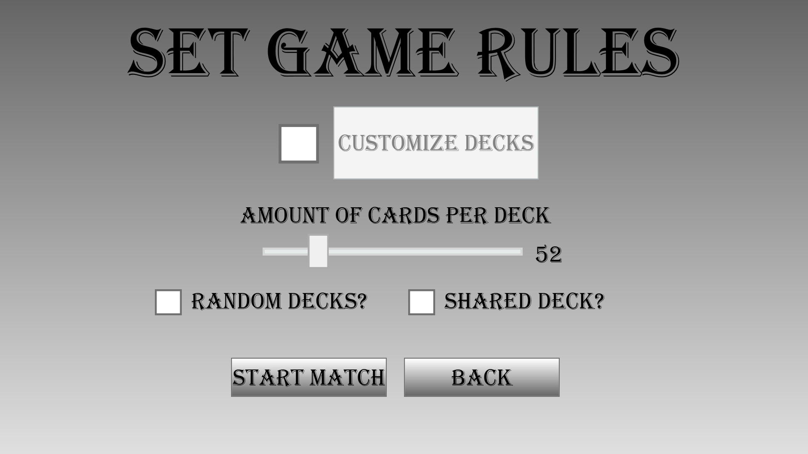

The Mediocre Card Game is a simple WPF-based strategy card game that pits the player against a CPU opponent. The player and CPU take turns playing cards to gain points against each other, while also trying to block their opponent's plays. The game features customizable game rules that allow you to play the game in many different ways. The game can be downloaded completely for free here.
 
* 1.7.6.1: Implimented a card unlocking system for the previously unimplimented card sets
more card sets have a random chance to be unlocked after beating a classic mode match
fixed an issue with the custom deck option in the custom deck settings
* 1.7.5.5: Updated Ruby, Sapphire, and Emerald card set textures
played card text color no longer turns green when the player plays a card
* 1.7.5.4: Fixed a bug that occured when deleting card set data with a non-default card set selected
* 1.7.5.3: Updated the "Holographic" card texture
* 1.7.5.2: Replaced the "Secondary" card set's placeholder name with the new official name "Contrast"
The database manager now checks for the outdated "Secondary" card set data and corrects it if it exists
Replaced the "Holographic" card set's texture. The old texture was renamed to "Irridescent"
Added new card textures and the version indicator on the main menu now displays the revision number
* 1.7.5.1: Made the Gold card set unlockable. See the Cards page for info on how to unlock it
* 1.7.5: Added a "game select" screen that allows the choice of playing either a classic or custom game
* 1.7.4.2: Fixed a problem with the save data storage system
* 1.7.4: Added a unique texture for cards played by the CPU
New card sets were added. Player now has two card sets unlocked by default
* 1.7.3: Fixed a visual bug that caused the texture of the played card to revert to default when the CPU has no cards
* 1.7.2.2: The fullscreen setting change is now properly saved when using the F11 keybind to toggle fullscreen
* 1.7.2: The default card set is now properly saved to the unlocked cards database
Changes made to game settings and card customization are now saved and automatically loaded on startup
Card textures are now packed inside of the application
* 1.7.1: Added a card customization feature
The options menu now includes a card customization menu